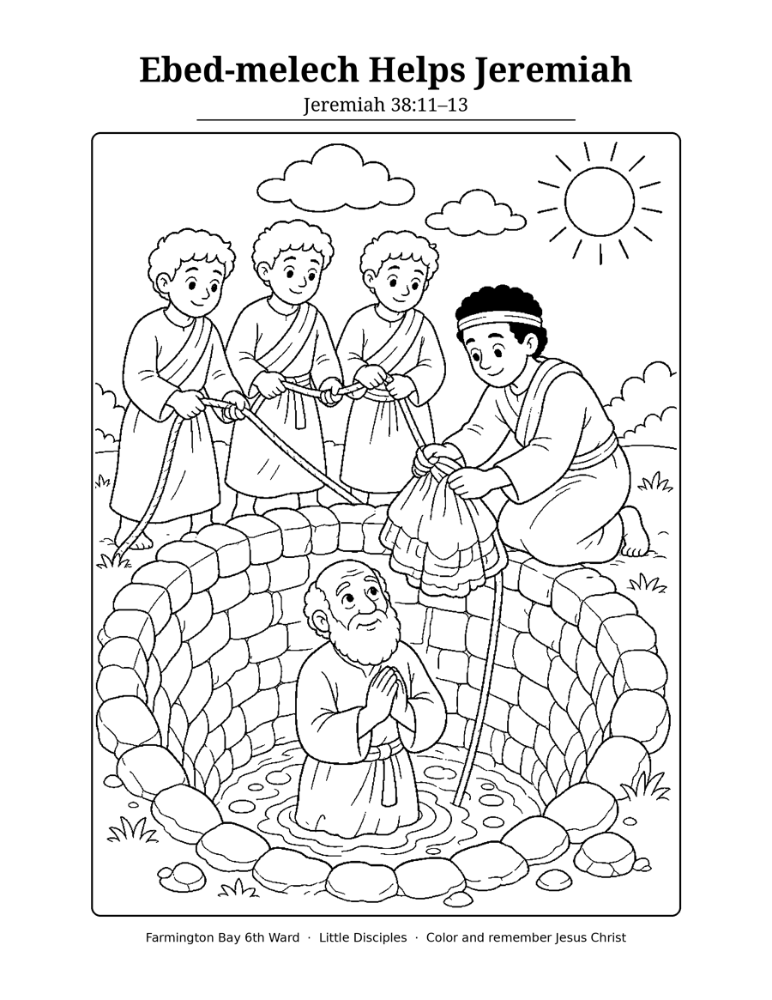

Ebed-melech Helps Jeremiah
Jeremiah 38:11–13

⬇ Download & Print (PDF)Download picture (PNG)Letter size (8.5 × 11 in). Optional, just for fun at home.
Make it bright, share His light!
A new coloring page each week to go with what we are learning about Jesus Christ.

⬇ Download & Print (PDF)Download picture (PNG)Letter size (8.5 × 11 in). Optional, just for fun at home.